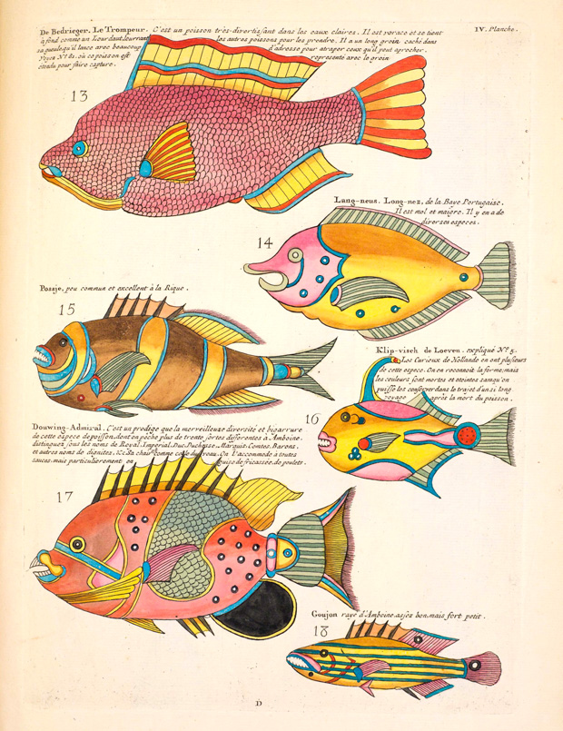
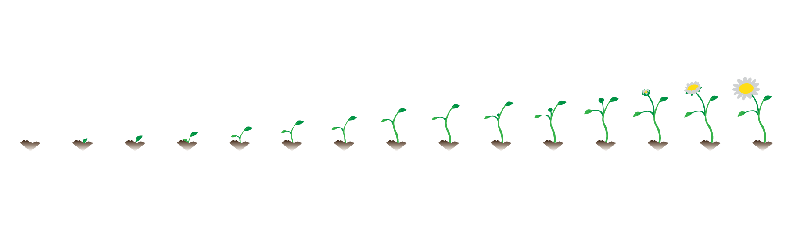

dp50mm
dp50mmPhenotype Augmented Reality iOS app [work-in-progress]
Overview
- Augmented reality
- Smartphone platform
- Interaction
- Existing technology
- Aruco markers
- Implementation on iOS
- Camera calibration
- Marker detection & orientation
- Image management
- Neural network training
- Overlays
Tutorial
This is a step-by-step tutorial for implementing Aruco marker detection and Neural Network phenotype detection in iOS with information overlays for augmenting reality. It is written as documentation for my graduation project. The goal of the project is to make observations and conclusions in experiments with growing plants more easily shareable by augmenting reality with digitally stored and analysed images.
Observations
The use of visual communication in the form of illustrations goes back a long way in biology.
Illustration from the book Histoire naturelle by Louis Renard, published in Amsterdam in 1754.
{kind=link}
Making drawings of the phenomenon that is the subject of study is still regular practice in high-school.
Digital imaging
In the past this required a lot of sketching skills. These days images can quickly be captured through digital cameras everyone has on them everyday. This enables new modes of communication in the practice of biological research.
Visual storytelling
By compiling a series of images an order in events can be implied and highlighted, experience can be recreated or synthesized.
Interactive visuals
Another step further is to create interactive graphics that let the observer navigate an experience motivated by their own intentionality.
Possibilities
The application to be developed in this tutorial allows you to more easily compile series and collections of images along dimensions such as location, orientation and time. A next step is to increase the number of dimensions for ordering images by generating algorithms (neural networks) to detect phenomena in the image.
The Aruco markers are used for re-constructing 3d points from the 2d image plane. Because in the garden set-ups photographed the aruco markers remain stationary the camera orientation can be deducted from the marker orientation.
Functionalities
- Re-orient images to match perspectives based on aruco markers.
- Train neural networks to detect various biological phenomena.
The Neural Networks are used for detecting various phenomena in the image. The goal is to create an application where images can be re-oriented to match previous perspectives on reality as well as real-time video feeds. In this tutorial we go over the various steps of image processing necessary to produce the functionalities described above.
Augmented reality

Augmented reality is a live direct or indirect view of the physical real world being augmented by a computer for example.
Smartphone platform
What is commonly known as the smartphone is a computing platform ready to use for augmented reality development.
- It provides a camera to digitally capture a perspective on reality.
- A computer to analyse and augment the data.
- A touch-screen to display and interact with the captured data.
Interaction
Image detection and analysis produces numerous augmented views. In development and interaction it's useful to continuously have quick access to all of them. With a horizontal scroll-view in iOS each of the views can be put next to each other.

Views
The multiple views provide augmented perspectives on the live camera image-feed.
Image capture
With a button an image can be captured for storage.
iOS / iPhone camera
The iPhone has a powerful camera to capture live video streams for augmented reality applications. It is controlable through the AV Foundation framework in the iOS operating system.
Real-time stream
The core of AR is the display and analysis of a live camera stream with overlays.
Image capture
In this application images can be captured to be integrated in the AR layers.
Libraries
This application of computer vision has been built and implemented in various open and closed libraries. To detect these the openCV library is used with the Aruco module.
Aruco markers
Pose estimation
We want to know the rotation and translation for each detected marker. The function estimatePoseSingleMarkers gives us these. It takes the following attributes: corners, markerSize, cameraMatrix, distCoeffs, rvecs, tvecs. The rvecs & tvecs are arrays of vectors.
- rvec: Rotation vector
- tvec: Translation vector
The detectMarkers function provides the initial array of markers together with the ids. So to create the final output of markers we go through the following steps:
- get image
- get camera parameters
- get the camera parameters
- detect markers
- loop through markers for pose detection
- Return poses to main application
iOS Application architecture
OpenCV as a C library can be used on iOS through Objective-C. The current standard for programming in iOS is the Swift programming language. To use the capabilities of OpenCV in Swift wrapper code needs to be written. On the one hand functions need to be called from Swift code and data needs to be returned from Objective C to the Swift function calls.
Calling Objective-C functions from swift
Returning data to Swift functions
Interacting With Objective-C Apis
Camera calibration
The lens system of a camera distorts the captured image. The pose estimation function of the Aruco module requires parameters to correct for that distortion. These are a cameraMatrix object and distCoeffs object as defined by the OpenCV calib3d camera calibration module. In this part of the tutorial we go over how these are determined for a camera.
Distortion
The lens distortion can be categorized in two mayor transformations:
- radial transformation
- tangential transformation
OpenCV has tools to correct for this distortion in the form of a Camera Matrix object, Algorithms to determine the distortion parameters of the lens as well as corrections for applications.
Camera Matrix
The camera matrix contains the following parameters in a matrix format:
fx (focal length in pixel units)
fy (focal length in pixel units)
cx (center x)
cy (center y)
These parameters scale with the image resolution.
This is stored in a 3x3 matrix.
Distortion co-efficients
These are stored in a 5x1 matrix.